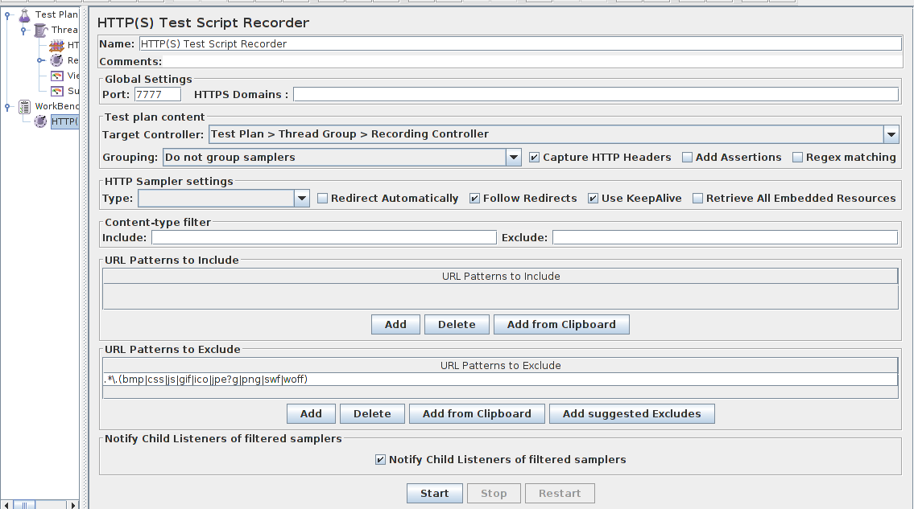
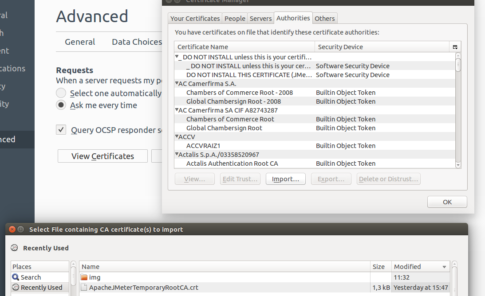
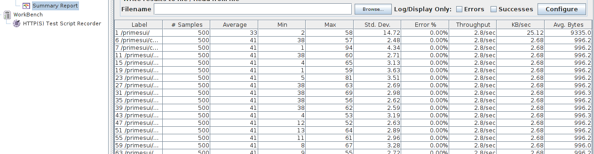

JMeter
An Opensource Load Testing tool
JMeter15 February 2016
Summary
This is a relatively short tutorial to JMeter tool
The aim is to give an overview of the tool - it will not cover everything
We will focus here on using the GUI, it is still possible to use CLI only
1. Why JMeter?
Pros
- Free & Opensource Load Test tool
- Java app - run on any system with Java
- GUI
- Work with many protocols / lots of plugins for almost everything
- Distributed testing is possible
- Widely used & approved
Cons
- You can only test web app
- High consumption of memory with GUI (warning: Heisenberg's Uncertainty Principle)
- Doc is not exhaustive
- It is sometimes hard to follow too complex scenarios
2. JMeter functionalities
Supported protocols
- Web - HTTP, HTTPS
- SOAP / REST
- FTP
- Database via JDBC
- LDAP
- Message-oriented middleware (MOM) via JMS
- Mail - SMTP(S), POP3(S) and IMAP(S)
- MongoDB (NoSQL)
- Native commands or shell scripts
- TCP
Recorder
It is possible to record scenarios: simply browse your website with your web browser configured with JMeter, and replay your recorded scenarios with hundreds of VUSers.
Reports & listener
- Automatic report generation
- Add & delete listeners easily with GUI
- One listener = one way to vizualise data from test
- With graphs and metrics, it is easier to analyse and understand the possible problems
Possible listener output in JMeter

3. Installation & configuration
Before reading further, you should:
- Have Java JVM > 1.6 on your machine
- Have enough memory on your machine... (> 4 GB is better)
- Docker installed & ready (see: Docker)
- Git
For JMeter install itself:
To test JMeter, we will need:
Download links
Official website: jmeter.apache.org/download_jmeter.cgi
Download the latest binary in zip / tgz format
Extract & execute
For Linux
user : ~ > mkdir ~/Sandbox
user : ~ > cp Downloads/apache-jmeter-*.tgz ~/Sandbox/
user : ~ > cd Sandbox/
user : ~/Sandbox > tar -xvf apache-jmeter-*.tgz
user : ~/Sandbox > cd apache-jmeter-*/
user : ~/Sandbox > chmod 755 ./bin/jmeter
user : ~/Sandbox > ./bin/jmeter #if you are using JMeter without proxy
user : ~/Sandbox > ./bin/jmeter -H proxy-addr -P proxy-port #with proxy
Note: if your proxy is localhost, just use -H localhost (http://127.0.0.1 & http://localhost won't actually work...)
For Windows
- Unzip the previously downloaded archive
- Go to bin/ directory
- Double-click on
"jmeter.bat" - Done !
If you are using a proxy:
jmeter.bat -H proxy-addr -P proxy-portJMeter interface

Troubleshooting: see jmeter.apache.org/usermanual/get-started.html
Need more configuration ? See: configuration details
4. Case studies: PrimesUI
Step 1. Setup PrimesUI
About PrimesUI
- App to test various langages & implementations efficiency
- Playing with primes
- GitHub page: here
- Dockerized environnement
Basically, we will hit an url with a certain number of VUsers to test the application
We will use this app to run our first JMeter test
Install PrimesUI
- Follow github.com/dacr/dock-primesui
- Run the following:
curl http://localhost:8888/primesui/check - This command should give you back some html code if primesui is ready
- If you hit
http://127.0.0.1:8888/primesui/with your favorite browser, you should see the following webpage (see below)
PrimesUI webpage
Step 2: Configure the JMeter recorder
Principle
You will now setup a proxy with JMeter and this proxy will record any action you have on PrimesUI:
- Click on a link
- Reload the page
- Download something (css, image, ...)
- ...
You will be able afterward to replay all the recorded actions with VUsers
Let's get started!
First, create a "Thread Group" by clicking right on "Test Plan"
- Right click on the new "Thread Group" and "Add/Config Element/HTTP Request Defaults"
- Put the following "127.0.0.1" on the field "Server Name or IP" and "8888" on the field "Port Number"

- Right click on "Thread Group" and "Add/Logic Controller/Recording Controller"

- We now have the minimum requirements to record our actions on the stub website
- Then, right click on "WorkBench" and "Add/Non-Test Elements/HTTP(S) Test Script Recorder"
- Configure the port of your proxy (I have chosen 7777 in this case)
- Configure the Target Controller (Test Plan > Thread Group > Recording Controller)
- Click on "Add suggested Excludes"
HTTP(S) Test Script Recorder Configuration (detailled image)
{kind=link}
Click on the Start button on the Script Recorder to start the recorder
Step 3: Configure the web browser
Principle
- You will now setup your browser to make it communicate with webpages through your JMeter proxy previously set
- You will be able afterward to play & record your test scenario
- Browser used for this part: Firefox
Let's get started!
- First, open Firefox and go to "Preference/Advanced/Network"
- On the section "Connection", click on "Settings" and setup your proxy (see below)
Configure Firefox to use JMeter's proxy
- To install the JMeter certificate in Firefox, go to "Preference/Advanced/Certificates", "View certificates" and "Import"
- Tip: the JMeters's self-signed certificates is in
%JMETER_HOME%/bin/
Install JMeter certificate
And now, browse your app
Good news everyone, your browser is now ready! Simply hit "http://127.0.0.1:8888/primesui/", browse the page, hit several times "http://127.0.0.1:8888/primesui/check", have some fun with urls...
- When you have finished playing with the app, return to JMeter and click on the "Stop" button on the recorder
- You should see that there is some newly recorded http requests under the "Recording Controller" (if not, please check your configuration / return to step 2)

Step 4: Replay your recorded test
Principle
- You will now replay your recorded test with 5 VUsers
Let's get started!
- First, click on "Thread Group" and:
- Set "Number Of Thread" to 5
- Set "Loop Count" to 100
- When it is done, right click on "Thread Group" and "Add/Listener/View Results in Table"
Hit "Start" to play your scenario
- You can now observe the result of your test with the listeners
- In real time
- At the end of the test
See screenshot below
Listeners output 1
Listeners output 2
Build test without recorder
Principle
- You will now build a test from scratch without help from the recorder
- All the URL you want to test will be configured directly by you
Let's get started, with a new JMeter project!
- First, close the actual project
- Right click on "Test Plan" and "Add/Threads (Users)/Thread Group"
- Right click on the new "Thread Group" and "Add/Config Element/HTTP Request Defaults"
- Put the following "127.0.0.1" on the field "Server Name or IP" and "8888" on the field "Port Number"
- Add a listener of your choice under "Thread Group"
- Right click on "Thread Group" and "Add/Sampler/HTTP Request
- This will be the first URL of your test
- You have to create this URL manually
- The URL we are interested in is /primesui/check : just put "/primesui/check" in "Path" field
- Note: The "HTTP Request Defaults" is the default "Server Name" and "Port Number" for every request under it / on the actual "Thread Group"
Manual HTTP Request
Configure your VUsers
- Click on "Thread Group" and configure:
- 50 Threads (50 VUsers!)
- 100 Loops
- 50 Threads (50 VUsers!)
- 100 Loops
Run your test and analyse output!
In this configuration, each VUsers will basically hit /primesui/check a hundred times!
Notes
- You can create as much "HTTP Request" as you need
- The "HTTP Request" are executed sequentially in the order they are on the "Thread Group"
- To make the test more realistic, it can be useful to add "Timers" (Right click on "Thread Group", then "Add/Timer"
5. Going Further
Want to practice?
Take a look at:
- Building an Advanced Web Test Plan (JMeter official doc)
- JMeter - Best Practices
- Javacodegeeks tutorial
JMeter on SaaS
Better interfaces & reports sexier, but theses tools are based on JMeter - no big news
Other free tools
- Gatling: here
- Scala written
- Recorder available
- Code writting with a Domain Specific Language (DSL)
- Only Http/Https supported
The report generated is very precise and dynamic
Gatling is asynchronous => it is able to simulate a lot of VUs!
The end
I hope you'll find this tutorial useful!
About me
- Colin LEVERGER
- Dev Scala, Java, Sys admin
- DevOps & Continuous Integration lover
- Web portfolio: http://colinleverger.fr
- Github: https://github.com/ColinLeverger
- LinkedIn: https://linkedin.com/in/colinleverger
- Get in touch! :)